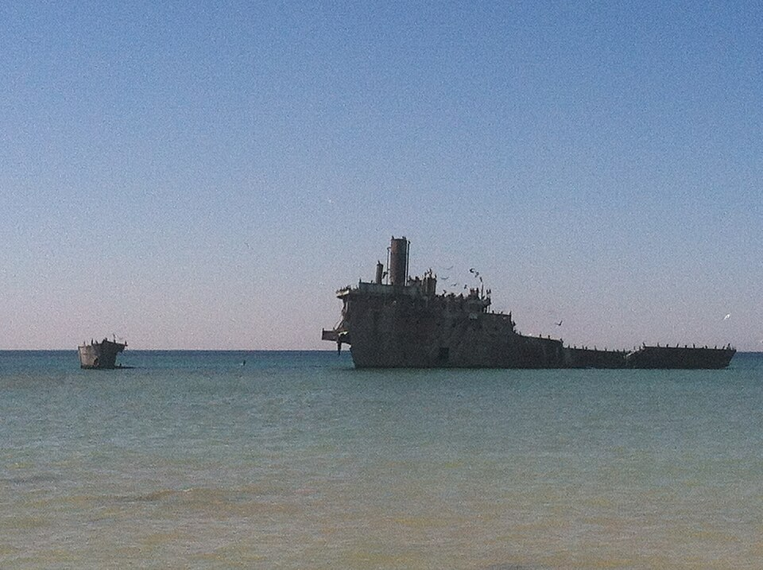
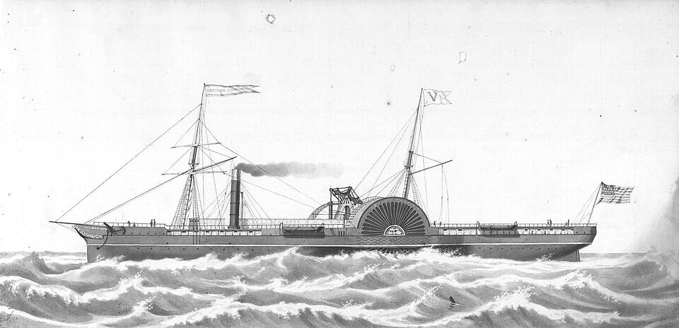

Abandoned Shipwrecks Act of 1987
Created by Megan Cook and Declan Hilt
What Is The Abandoned Shipwreck Act?

The Abandoned Shipwreck Act of 1987 (ASA) was enacted following the Submerged Lands Act of 1953, with the intention of further protecting shipwrecks in the rivers and lakes of the United States as well as any shipwrecks up to three miles offshore into the ocean. Under this legislation, any shipwrecks deemed “abandoned” on state land are owned by the state, federal lands by the federal government, and tribal lands by the associated tribe—the only major exception to this is that of U.S. Army and Foreign Military vessel wrecks, which continue to be owned by the respective government no matter where they are located (National Park Service 2025; Naval History & Heritage Command; 43 U.S.C. 39). Creation of the legislation was done with consultation between the National Park Service, divers, archaeologists, historic preservationists, and individual States, among others in both public and private sectors. The guidelines in this legislation help establish management programs, providing public access and education to these shipwrecks, and the interpretation and evaluation of these wrecks as well (Croome 1992). Since its codification, there have not been any major changes to the legislation at all.
TEMPORARY NOTE: We should put the intended benefits of legislation here - Declan --- There are many useful things that you can do in HTML, and here we will provide a list of some things that may be useful for creating your site:
- You can also create regular links to things without pop-over content. For example, this link goes to the Indian Country Wiki. You may also make links open up in a new tab by adding the target attribute with the the blank value: same link, but it opens in a new tab
- You may also create links that jump to other parts of the page by putting an id in the element you want to jump to (see the Image Sources heading below to see where to put the id), and then doing #id in the href.
- You may also format your text in an number of ways, including by: bolding, italicizing, emphaszing, underlining or by designating strong text
For ideas on what else is possible with HTML, you can check out W3Schools, or ask your graduate assistant for some feedback on what you want to do with your essay.
Upsides, Downsides, And Exceptions in The Act
The intended benefits for the act were mainly to ensure that shipwrecks and any goods inside of them could be legally protected from looters and salvagers. It also serves to eliminate confusion, to the best of its ability, over ownership of shipwrecks. Beyond this, the law intends to allow these sites to remain open for multi-use purposes, considering the shipwrecks valuable resources for both educational and recreational purposes. Being able to preserve these wrecks in their current states offers archaeologists a wealth of material culture and sites to study. Having these sites open to the public not only enables the public’s education on the sites, but it also boosts a state’s tourism, which can continue to further benefit the state (Croome 1992; National Park Service 2025).
As the act has not been updated since it became law in 1988, there are still a few issues and concerns that do arise. Currently, there is no legal precedent to return personal belongings to descendants of individuals who may have died in a shipwreck. (National Park Service 2018). To make it so the act better serves the descendants and other loved ones of those affected, amending the act to work on attempting a return of personal belongings would be a great first step, although the addition of such an amendment would, of course, likely bring up issues of its own. It could also be beneficial to more concretely define in the legislation exactly what constitutes an abandoned shipwreck—such definition could avoid legal issues like the ones we have previously mentioned with the Captain Lawrence and Brother Jonathan wrecks.
- Go to the YouTube video that you want to embed
- Select Share
- copy the embed code wrapped in an "iframe"(and start the video later if you wish)
- Paste the web page where you want it in your web page.
If you have your own mp4 video that you want to embed into your web page, without linking to it on YouTube, you can do that too. This has the advantage of not giving YouTube rights to your video, while also making sure that you video will not be taken down from the internet (because you'll refer to it in your img folder (if you were a super stickler, you could create a video folder and refer to it in there.))
The Abandoned Shipwrecks Act In Action!
The Wreck of the Brother Jonathan
Located Around: N 45.52772181600272 W -86.66464132265881

The S.S. Brother Jonathan is a paddle steamer wreck located off the coast of California near Crescent City. The ship wrecked in 1865, and an ASA-related lawsuit was filed in 1997 by Deep Sea Research, who sought to claim ownership of the vessel and its associated cargo.
The Wreck of the Captain Lawrence
Located Around: N 41.75078574023692 W -124.21114999995565
The Captain Lawrence is a wreck located in Lake Michigan, off the shore of Poverty Island in Michigans Upper Peninsula. It sank in September of 1933, where the inclement weather that initially caused the ship to run aground heavily damaged the ship, leading it to sink. The ASA-related case connected to the wreck began in the late 1980s into the early 1990s, when treasure hunter Steven Libert learned of the existence of the wreck while searching for Civil War-era gold in Lake Michigan. Libert and Fairport International Exploration, Inc. sought to claim salvage rights to the wreck, while the State of Michigan claimed that since the wreck had been abandoned by its original owner, the State had rights to the wreck. Libert had, at this point, actually received a Salvage Bill of Sale from the daughter of the ships original owner, but
The Wreck of the Francisco Morazon
Located Around: N 44.99685778106288 W -86.14175013373234
The Francisco Morazan is the wreck of a cargo steamship located in the waters of Lake Michigan off the shore of South Manitou Island. The ship wrecked on November 29th, 1960, during heavy fog and snow the ship drifted off course, running aground just offshore of the island. (NPS 2025)
Nullam vehicula ipsum a arcu cursus vitae congue. Ut placerat orci nulla pellentesque dignissim enim. Viverra mauris in aliquam sem fringilla ut morbi tincidunt. Pulvinar elementum integer enim neque volutpat ac tincidunt vitae semper. Egestas tellus rutrum tellus pellentesque eu tincidunt tortor. Mi ipsum faucibus vitae aliquet nec ullamcorper sit. Quam id leo in vitae turpis massa sed elementum. Urna nunc id cursus metus aliquam eleifend mi. Nibh mauris cursus mattis molestie a iaculis at erat. Id eu nisl nunc mi ipsum faucibus vitae.
Senectus et netus et malesuada fames ac turpis. Pretium nibh ipsum consequat nisl vel pretium lectus quam. Purus sit amet luctus venenatis. Sed elementum tempus egestas sed sed risus pretium quam. Adipiscing bibendum est ultricies integer quis auctor elit sed vulputate. Elementum nisi quis eleifend quam adipiscing vitae proin sagittis. Ac turpis egestas integer eget aliquet nibh praesent tristique magna. Nunc lobortis mattis aliquam faucibus purus in massa tempor nec. Purus ut faucibus pulvinar elementum. Tempor commodo ullamcorper a lacus. Tortor aliquam nulla facilisi cras fermentum odio. Adipiscing commodo elit at imperdiet. Sapien faucibus et molestie ac. Posuere morbi leo urna molestie.
Image Sources
Image 1: Sitting Bull. c1884. photographed and published by Palmquist & Jurgens, St. Paul, Minn. Obtained on 2/17/22 from https://www.loc.gov/item/94500412/
Image 2: Chief Joseph, Nez Percé. 1900. Photographed by Gill, De Lancey. Obtained on 2/17/22 from https://www.loc.gov/item/2002719520/.